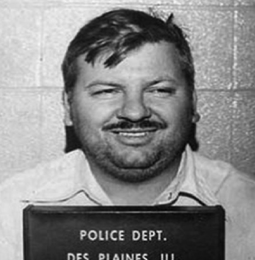
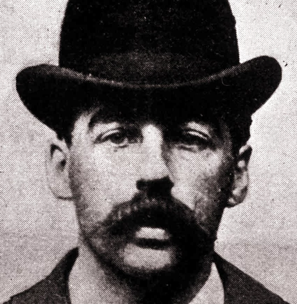

Американский серийный убийца, насильник, похититель людей, каннибал и некрофил, действовавший в 1970-е годы. Его жертвами становились молодые девушки. Точное число его жертв неизвестно. Незадолго до своей казни он признался в 36 убийствах.
Гэри Риджуэй
"Убийца с Грин-Ривер" в 1980-1990-х годах задушил по меньшей мере 71 женщину. Был арестован после того как следствие смогло доказать с помощью ДНК-анализа его связь с найденными трупами. Излюбленный способ убийства – удушение. Арестован в 1997 году.

Джон Гейси
Знаменитый «Клоун-убийца» Джон Уэйн Гейси. Он получил свое прозвище, поскольку выступал на детских праздниках в роли клоуна Пого. Гейси был признан виновным в изнасиловании, пытках и убийстве 33 мальчиков и подростков.
Андрей Чикатило
Советский убийца по прозвищу Ростовский потрошитель, который в период с 1978 по 1990 год изнасиловал, убил и искалечил по меньшей мере пятьдесят две женщины и ребенка в СССР.
Альберт Фиш
Один из самых жестоких маньяков в истории. Он убивал только детей и подростков, перед смертью насилуя и жестоко мучая их и поедая их плоть. А потом, уже будучи в тюрьме, Фиш писал письма родителям своих жертв, описывая как убивал.
Михаил Попков
Российский серийный убийца и насильник. В период с 1992 по 2010 год совершил 80 доказанных убийств в Иркутской области, главным образом в Ангарске и его окрестностях: его жертвами стали 79 женщин и милиционер. Михаил Попков был младшим лейтенантом МВД РФ.
Сергей Головкин
Советский и российский серийный убийца, жертвами которого по материалам суда стали 11 мальчиков и юношей в период с 1986 по 1992 годы. Свое прозвище получил от известного шахматиста Фишера, это прозвище сказал один из детей, на которых он нападал.
Анатолий Сливко
Советский серийный убийца и педофил, действовавший в городе Невинномысске Ставропольского края. Сливко руководил туристическим клубом «Чергид», в котором водил школьников в походы, и имел звание заслуженного учителя.
Ахмад Сураджи
Народный целитель из Индонезии, которому однажды приснился сон о том, что он должен собрать слюну 100 женщин и выпить ее, чтобы получить силу Бога. Таким образом Ахмад убил и закопал у себя на заднем дворе 42 женщины возрастом от 16 до 30 лет, которых позже нашли.
Джеффри Дамер
Американский серийный убийца, каннибал и насильник, жертвами которого стали 17 юношей и мужчин в период между 1978 и 1991 годами. Все преступления, кроме одного, были совершены в Милуоки с 1987 по 1991 год.
Ричард Рамирес
Осуждённый американский серийный убийца латиноамериканского происхождения. Известен также как «Ночной охотник». На счету Рамиреса почти два десятка человеческих жертв. Убивал исключительно ради чувства власти над людьми.
Александр Пичушкин
Российский серийный убийца, известный как «Битцевский маньяк» и «Убийца с шахматной доской». Совершил не менее 49 убийств в московском Битцевском парке и его окрестностях. Мечтал убить столько же человек, сколько клеток на шахматной доске.
Зодиак
Псевдоним неустановленного американского убийцы, действовавшего в Северной Калифорнии, по крайней мере с конца 1960-х до начала 1970-х годов. Убийца совершил семь установленных нападени в период с декабря 1968 года по октябрь 1969 года.
Владимир Ионесян
Советский серийни, его популярной в народе кличкой стала «Мосгаз», поскольку проникал в квартиры, представляясь работником «Мосгаза».
Николай Джумагалиев
Самый известный маньяк Казахстана, также известный как «Железный клык». Джумагалиев убил и съел по меньшей мере 10 человек, в основном женщин, проживавших в Алма-Атинской области.
Эйлин Уорнос
Американская серийная убийца. В 1989-1990 годах, занимаясь продажей интимных услуг на трассах в штате Флорида, убила и ограбила семерых мужчин. Мотивом являлись клиенты, которые плохо относились к Эйлин.

Генри Холмс
Первый официально зарегистрированный маньяк США, был известен своим отелем «Пыток». В его отеле были специальные комнаты, оборудованные под пыточные камеры. Также, с помощью найма разных сотрудников никто не знал план отеля.
Чарльз Мэнсон
Американский серийный убийца, создатель общины, которая называла себя «Семьёй» и, по официальной версии прокуратуры США, являлась сектой, члены которой в 1969 году, совершили ряд жестоких убийств, в том числе убили беременную актрису Шэрон Тейт.
Чарльз Каллен
Американский серийный убийца. Каллен, убил десятки пациентов в течение 16-летней карьеры, пока не был арестован в 2003 году. Он признался в совершении целых 40 убийств, по меньшей мере 29 из которых были подтверждены.
Джек Уинтервегер
Международный преступник, журналист и серийный убийца. Имел прозвища «Венский душитель». Стал известен во время отбывания первого пожизненного срока как объект и соинициатор кампании за собственное освобождение в 1988-1989 годах.